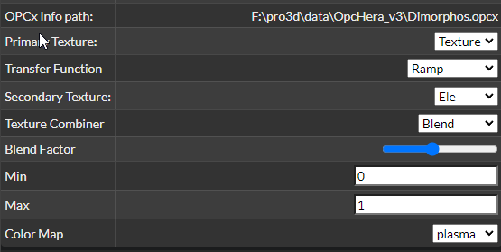
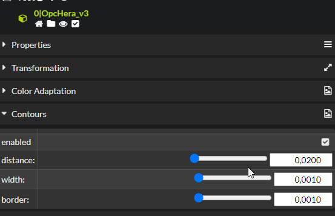
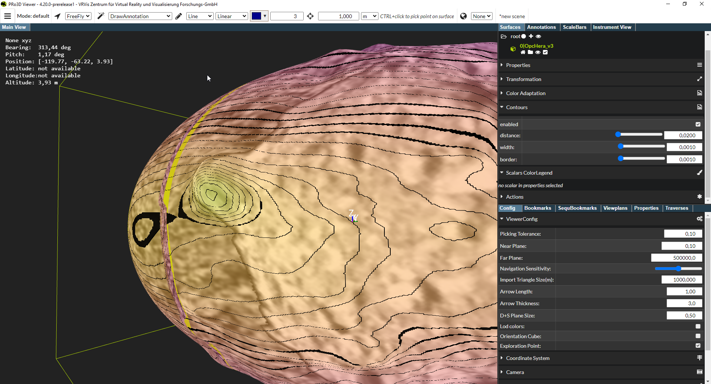

Contour Lines

Synopsis: Contour lines for texture layers Status: Work-In-Progress Interacts with: Feature-Multitexturing
UI
The feature only works in combination with multilayer opcs. By using surface properties, choose a particular layer as a secondary texture:

Next, in the contour section, enable it and set distance of the lines, as well as line width and line border (both in the domain of the value chosen for texturing, here Ele).

The whole setup then looks like:

Implementation
UI and logics implemented as a separate app, see: https://github.com/pro3d-space/PRo3D/blob/6416a1176dea28043548c9797436934f779a3e54/src/PRo3D.Core/VisualizationAndTFApp.fs
The line color is blended with the surface color in a separate shader: https://github.com/pro3d-space/PRo3D/blob/6416a1176dea28043548c9797436934f779a3e54/src/PRo3D.Base/Utilities.fs#L744 The shader uses hermite interpolation for smooth lines: https://github.com/pro3d-space/PRo3D/blob/6416a1176dea28043548c9797436934f779a3e54/src/PRo3D.Base/Utilities.fs#L722
Caveats:
- Currently the color cannot be chaned.
- It only works for secondary texture layers (shaders need to re-organized to be more flexible here).